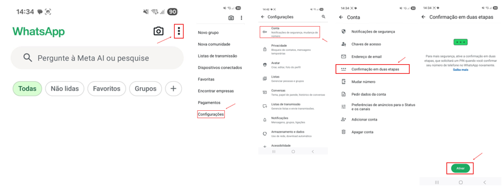

O Que Você Vai Aprender
- Identificar os 5 golpes digitais mais comuns que afetam brasileiros todos os dias
- Reconhecer sinais de alerta antes de cair em armadilhas online
- Aplicar as 3 Regras de Ouro para se proteger de 90% dos golpes
- Ativar verificação em 2 etapas no WhatsApp, e-mail e aplicativos bancários
- Denunciar golpes corretamente para ajudar a polícia e outras vítimas
- Proteger sua família e amigos compartilhando este conhecimento
Antes de Começar - Importante Saber:
- Qualquer pessoa pode ser vítima - golpistas são profissionais e usam técnicas de manipulação psicológica
- Não tenha vergonha se já caiu em algum golpe. O importante é aprender e se proteger daqui para frente
- Compartilhe este tutorial com familiares e amigos, especialmente idosos e jovens
- Na dúvida, sempre pergunte para alguém de confiança antes de passar dados ou dinheiro
Os 5 Golpes Mais Comuns
1
Golpe 1: Falsa Central do Banco
Como funciona:
Você recebe uma ligação de alguém dizendo ser do banco. A pessoa fala com firmeza, parece profissional e diz que:
- "Detectamos uma compra suspeita no seu cartão"
- "Sua conta foi bloqueada por segurança"
- "Precisamos confirmar seus dados para desbloquear"
- "Digite sua senha no telefone ou aplicativo que vamos enviar"
Por Que É Golpe - NENHUM BANCO VERDADEIRO:
- Pede senha por telefone
- Pede código de SMS
- Pede para instalar aplicativo "de segurança"
- Pede para fazer transferências "para se proteger"
- Pressiona você a agir com urgência
Como se proteger:
- Desligue na hora - não continue a conversa
- Ligue você mesmo para o número do seu banco (o que está no verso do cartão ou app oficial)
- Confirme se houve realmente algum problema
- Nunca forneça senha, código SMS ou dados completos do cartão
- Desconfie de urgência - bancos não pressionam clientes
Dica de Segurança: Salve o número oficial do seu banco na agenda com o nome "BANCO [NOME] - OFICIAL". Assim você reconhece quando for ligação verdadeira!
2
Golpe 2: Clonagem de WhatsApp
Como funciona:
O golpista consegue seu número de telefone (redes sociais, listas vazadas, etc.) e tenta clonar seu WhatsApp:
- Ele instala o WhatsApp em outro celular usando seu número
- O WhatsApp envia um código SMS de 6 dígitos para você
- O golpista liga ou manda mensagem pedindo "aquele código que acabou de chegar"
- Ele inventa desculpas: "Enviei por engano", "É para um cadastro", "Preciso urgente"
- Se você passar o código, ele clona seu WhatsApp
O Que Acontece Depois - Com seu WhatsApp clonado, o golpista:
- Pede dinheiro emprestado para seus contatos se passando por você
- Acessa suas conversas e fotos pessoais
- Usa seu nome para aplicar golpes
- Pede Pix "urgente" para família e amigos
Como se proteger:
- NUNCA passe o código de 6 dígitos para NINGUÉM, nem conhecido
- Ative a verificação em 2 etapas (veja mais adiante neste tutorial)
- Se receber o código sem pedir, significa que alguém está tentando clonar
- Não acredite em desculpas de "enviei por engano"
- Avise seus contatos imediatamente se for clonado
Você Sabia? O WhatsApp NUNCA liga ou manda mensagem pedindo o código. Ele só envia por SMS. Se alguém pediu, é golpe!
3
Golpe 3: Boleto ou QR Code Falso
Como funciona:
Você recebe um boleto ou QR Code de Pix aparentemente legítimo, mas os números foram trocados:
- Por e-mail: "Sua conta de luz", "Seu aluguel", "Mensalidade da escola"
- Por WhatsApp: Contato se passando por loja, empresa ou até conhecido
- Por SMS: "Seu boleto está vencendo, baixe aqui"
Sinais de alerta:
- Erros de português no texto do e-mail ou mensagem
- Remetente estranho - e-mail diferente do habitual da empresa
- Links encurtados (bit.ly, tinyurl, etc.) em vez do site oficial
- Urgência exagerada - "Pague hoje ou será cortado"
- Valores diferentes do que você costuma pagar
Cuidado Especial com Pix - Antes de pagar qualquer QR Code de Pix:
- Confira o NOME completo do recebedor na tela de confirmação
- Veja se é CPF ou CNPJ - empresa legítima geralmente usa CNPJ
- Se o nome não bate, NÃO pague!
Como se proteger:
- Nunca use boleto recebido por e-mail ou WhatsApp sem confirmar
- Acesse o site oficial da empresa e emita o boleto lá (segunda via)
- Ligue para a empresa e confirme se enviaram boleto
- Compare os dados - nome do beneficiário, valor, data de vencimento
- Use o app oficial da empresa quando possível (Cemig, Caesb, Neoenergia, etc.)
Regra de Ouro: Sempre confirme pelo canal oficial da empresa, nunca por links ou contatos que você recebeu!
4
Golpe 4: Link Falso (Phishing)
Como funciona:
Você recebe uma mensagem com link que parece ser de site oficial (banco, Gov.br, loja, Receita Federal), mas é falso:
| Site Verdadeiro |
Site Falso |
| gov.br |
gov-br.com / govbr.net |
| bb.com.br |
bancodobrasil.com / bb-brasil.com |
| caixa.gov.br |
caixa.com.br / caixaeconomica.net |
| receita.fazenda.gov.br |
receitafederal.com / receita.com.br |
Mensagens Comuns de Phishing:
- "Seu CPF está suspenso, regularize agora"
- "Você tem valores a receber do governo"
- "Sua conta será bloqueada, atualize seus dados"
- "Confirme seu pedido de compra" (que você não fez)
- "Clique aqui para não perder seu benefício"
- "Prêmio da loteria - você foi sorteado"
Como identificar um link falso:
- Olhe o endereço completo antes de clicar (segure o dedo no link no celular)
- Veja o domínio principal - deve ser .gov.br, .com.br do banco oficial
- Desconfie de domínios estranhos - .net, .info, .club, números misturados
- Cuidado com erros sutis - caixa.com em vez de caixa.gov.br
- Links encurtados (bit.ly) escondem o destino real
Como Verificar com Segurança:
No celular: Segure o dedo sobre o link por 2 segundos para ver o endereço completo antes de abrir.
No computador: Passe o mouse sobre o link (sem clicar) e olhe o endereço na parte de baixo do navegador.
Como se proteger:
- Nunca clique em links recebidos por SMS, e-mail ou WhatsApp
- Digite você mesmo o endereço no navegador (ex: www.gov.br)
- Use aplicativos oficiais baixados da Play Store ou App Store
- Verifique o cadeado (🔒) ao lado do endereço no navegador
- Se desconfiar, feche tudo e acesse pelo site oficial
5
Golpe 5: Falso Familiar em Apuros
Como funciona:
Você recebe mensagem ou ligação de alguém se passando por filho, sobrinho, neto ou amigo próximo:
Frases que os golpistas usam:
- "Oi mãe/pai, esse é meu novo número"
- "Sofri um acidente e estou no hospital"
- "Fui assaltado e levaram meu celular"
- "Meu celular quebrou, estou usando outro"
- "Preciso pagar uma coisa urgente, me ajuda?"
- "Não posso falar agora, só consegue transferir?"
Táticas de Manipulação - Os golpistas usam truques psicológicos:
- Urgência: "É urgente, não posso esperar"
- Medo: "Estou em perigo/com problema grave"
- Sigilo: "Não conta para ninguém"
- Pressão emocional: "Só você pode me ajudar"
Como se proteger:
- SEMPRE ligue para o número antigo do familiar para confirmar
- Faça uma pergunta que só o familiar verdadeiro saberia responder
- Ligue por vídeo - golpista nunca aceita videochamada
- Peça para falar - "Mande um áudio então"
- Não transfira sem confirmar pessoalmente
- Envolva outro familiar - "Vou ligar para seu irmão/sua mãe"
Sinais de Alerta:
- Não quer falar por telefone ou vídeo
- Pressiona para agir rápido
- Pede para não contar para ninguém
- Escreve diferente do jeito habitual
- Pede valores em Pix para desconhecidos
Regra Simples: Combine uma palavra-chave secreta com sua família! Se alguém pedir dinheiro, deve falar a palavra-chave primeiro. Sem a palavra = golpe!
As 3 Regras de Ouro da Proteção Digital
1
Regra 1: Banco NUNCA Pede Senha
Grave isso:
Nenhum Banco ou Empresa Séria Pede:
- Senha completa do cartão, app ou internet banking
- Código de SMS ou token
- Número completo do cartão + CVV (3 dígitos)
- Para instalar aplicativo remoto ou "de segurança"
- Para fazer transferência "provisória" ou "reverter fraude"
Se pedirem qualquer uma dessas coisas, DESLIGUE NA HORA. É golpe 100% garantido!
2
Regra 2: Sempre Verifique a URL
Antes de colocar qualquer dado pessoal ou senha:
- Olhe a barra de endereço no topo do navegador
- Confira o domínio - deve ser oficial (.gov.br, .com.br correto)
- Veja o cadeado (🔒) - deve estar fechado
- Clique no cadeado para ver o certificado de segurança
URLs Oficiais Principais:
- Governo Federal: www.gov.br
- Banco do Brasil: www.bb.com.br
- Caixa Econômica: www.caixa.gov.br
- Receita Federal: www.gov.br/receitafederal
3
Regra 3: Na Dúvida, Confirme por Outro Canal
Sempre que algo parecer suspeito:
- Pare tudo - não continue a ação
- Feche a conversa/site
- Ligue você mesmo para o número oficial
- Acesse o site oficial digitando o endereço
- Pergunte para alguém de confiança
Lembre-se: É melhor perder 5 minutos confirmando do que perder todo o seu dinheiro! Empresas sérias entendem e respeitam sua cautela.
Como Ativar Verificação em 2 Etapas
📱
No WhatsApp (Essencial!)
A verificação em 2 etapas cria uma senha extra de 6 dígitos que só você sabe. Assim, mesmo se alguém conseguir o código SMS, não consegue clonar seu WhatsApp!
Como ativar:
- Abra o WhatsApp
- Toque nos três pontinhos (⋮) no canto superior direito
- Vá em Configurações
- Toque em Conta
- Toque em Confirmação em duas etapas
- Toque em Ativar
- Crie uma senha de 6 dígitos (escolha algo que lembre, mas não óbvio como 123456)
- Confirme a senha digitando novamente
- Adicione um e-mail de recuperação (importante!)

Configuração da verificação em 2 etapas no WhatsApp
Importante:
- Anote essa senha em local seguro (caderno físico)
- Não use senhas óbvias como data de nascimento
- O WhatsApp vai pedir essa senha periodicamente para você não esquecer
📧
No E-mail (Gmail, Outlook, etc.)
Para Gmail:
- Acesse myaccount.google.com
- Clique em Segurança no menu lateral
- Em "Como fazer login no Google", clique em Verificação em duas etapas
- Clique em Começar
- Confirme sua senha do Gmail
- Adicione seu número de celular
- Escolha receber código por SMS
- Digite o código que chegou
- Clique em Ativar
Vantagem: Com verificação em 2 etapas, mesmo se alguém descobrir sua senha, não consegue entrar sem o código do celular!
🏦
Nos Aplicativos de Banco
A maioria dos bancos já tem verificação automática, mas você pode reforçar:
- Ative reconhecimento facial ou digital
- Cadastre apenas seu celular (não empreste para fazer cadastro)
- Ative notificações para todas as transações
- Configure limites de transferência mais baixos
- Ative o token no celular (não use SMS quando possível)
Dica Extra: Configure para receber notificação de TODAS as movimentações. Assim você sabe na hora se acontecer algo suspeito!
Como Denunciar Golpes
Delegacia Virtual - DF (PCDF)
Para moradores do Distrito Federal:
- Acesse www.pcdf.df.gov.br
- Clique em Delegacia Eletrônica
- Escolha Registrar Ocorrência
- Selecione o tipo: Estelionato ou Fraude Eletrônica
- Preencha todos os dados da ocorrência
- Anexe prints de conversas, comprovantes, etc.
- Guarde o número do boletim de ocorrência
Informações Úteis para a Denúncia:
- Número de telefone do golpista
- Prints de conversas (WhatsApp, SMS, e-mail)
- Dados bancários para onde enviou dinheiro
- Data e hora do golpe
- Links ou sites falsos
Denúncia ao Banco
Se foi vítima de golpe bancário:
- Ligue imediatamente para o banco (número oficial do cartão)
- Bloqueie cartões e contas
- Solicite estorno da transação (nem sempre é possível)
- Abra reclamação formal no banco
- Registre boletim na polícia
- Se o banco negar, reclame no Banco Central: www.bcb.gov.br
Importante: Quanto mais rápido você avisar o banco, maior a chance de bloquear a transação ou recuperar o dinheiro!
Outras Denúncias
| Tipo de Golpe |
Onde Denunciar |
| WhatsApp clonado |
WhatsApp: Settings → Help → Contact Us
E-mail: support@whatsapp.com |
| Site falso de loja |
Procon: www.procon.df.gov.br
Consumidor.gov.br |
| E-mail falso (phishing) |
Encaminhe para: cert@cert.br
(Centro de Estudos de Segurança) |
| Golpe telefônico |
Anatel: www.anatel.gov.br
Registre reclamação |
Reconheça os Sinais de Alerta
Bandeiras Vermelhas - Quando Desconfiar
Se a situação tem estes sinais, provavelmente é golpe:
Sinal 1: Urgência Exagerada
- "Precisa ser agora ou você perde"
- "Sua conta será bloqueada em 24 horas"
- "Última chance de resgatar o prêmio"
- "Resolva hoje ou terá prejuízo"
Motivo: Golpistas usam urgência para você não pensar direito e agir por impulso.
Sinal 2: Medo e Ameaça
- "Seu CPF será cancelado"
- "Você está sendo processado"
- "A polícia vai te procurar"
- "Sua conta está sob investigação"
Motivo: Pessoas com medo tomam decisões ruins e não pensam com clareza.
Sinal 3: Pedido de Sigilo
- "Não conte para ninguém"
- "É procedimento confidencial"
- "Não pode comentar nem com a família"
- "Mantenha segredo para sua segurança"
Motivo: Golpistas não querem que você consulte outras pessoas que possam alertá-lo.
Sinal 4: Oferta Boa Demais
- "Você ganhou um prêmio de R$ 50.000"
- "Investimento com retorno garantido de 30% ao mês"
- "Promoção exclusiva só para você"
- "Dinheiro esquecido em seu nome"
Motivo: Se parece bom demais para ser verdade, provavelmente é golpe.
Sinal 5: Pedido de Dados Sensíveis
- Senha completa
- Código de SMS
- Número completo do cartão + CVV
- Dados de conta bancária completos
Motivo: Empresas legítimas NUNCA pedem esses dados por telefone, WhatsApp ou e-mail.
Regra Simples: Se tem 2 ou mais sinais de alerta, PARE TUDO e não continue! Desligue, feche o site, não responda. Depois confirme por canal oficial.
Dúvidas Comuns
1. Já caí em um golpe. Devo ter vergonha?
NUNCA! Golpistas são profissionais e usam técnicas de psicologia para enganar qualquer pessoa. Pessoas inteligentes, educadas e atentas caem em golpes todos os dias. O importante é denunciar, aprender e se proteger daqui para frente. Compartilhe sua experiência para ajudar outros!
2. Meu WhatsApp foi clonado. O que faço AGORA?
Ações imediatas:
- Envie mensagem para TODOS os contatos avisando da clonagem pelo Status do WhatsApp ou por SMS
- Reinstale o WhatsApp no seu celular - isso expulsa o golpista
- Ative verificação em 2 etapas
- Registre boletim de ocorrência
- Avise o WhatsApp pelo e-mail support@whatsapp.com
3. Cliquei em um link suspeito. Estou em perigo?
Apenas clicar geralmente não causa problema. O perigo é se você colocou dados (senha, CPF, cartão) no site falso. Se só clicou: feche tudo, limpe o histórico e não se preocupe. Se colocou dados: mude TODAS as senhas imediatamente, monitore sua conta bancária e registre ocorrência.
4. Como saber se meu celular tem vírus?
Sinais comuns: celular lento demais, bateria acabando rápido, apps abrindo sozinhos, anúncios aparecendo fora de apps, conta de internet muito alta.
Solução: Instale um antivírus confiável (Avast, AVG, Kaspersky) da Play Store oficial e faça uma varredura completa.
5. Posso recuperar dinheiro perdido em golpe?
Depende. Se agiu muito rápido (minutos), há chance de o banco bloquear a transação. Se passou horas/dias, é mais difícil.
Sempre tente:
- Avisar o banco imediatamente
- Registrar B.O.
- Entrar com reclamação no Banco Central
- Se necessário, procurar advogado ou Juizado Especial
Não desista!
Dicas Extras de Proteção
Use senhas diferentes para cada serviço importante (e-mail, banco, Gov.br). Assim, se uma vazar, as outras ficam protegidas.
Não empreste seu celular desbloqueado para desconhecidos, mesmo "só para uma ligação". Eles podem instalar apps maliciosos em segundos.
Cuidado com e-mails de remetentes desconhecidos, especialmente com anexos. Vírus podem vir escondidos em PDFs e documentos.
Atualize seus apps regularmente. Atualizações corrigem falhas de segurança que golpistas exploram.
Desconfie de promoções em redes sociais que pedem dados pessoais. Empresas sérias não pedem CPF por DM.
Resolvendo Problemas Comuns
Problema 1: Esqueci a senha da verificação em 2 etapas do WhatsApp
Solução:
- Se cadastrou e-mail de recuperação: use a opção "Esqueci minha senha" e siga as instruções por e-mail
- Se não cadastrou e-mail: terá que aguardar 7 dias sem usar o WhatsApp. Depois desse período, poderá registrar novamente sem a senha
- Para evitar isso no futuro: sempre cadastre um e-mail de recuperação válido
Problema 2: Meu banco não quer devolver o dinheiro do golpe
Solução:
- Registre reclamação formal no próprio banco e guarde o número do protocolo
- Se negarem, abra reclamação no Banco Central: www.bcb.gov.br → Registrar Reclamação
- Registre também no Procon: www.procon.df.gov.br
- Considere procurar o Juizado Especial (para valores até 60 salários mínimos não precisa de advogado)
- Reúna todas as provas: prints, comprovantes, boletim de ocorrência
Importante: Bancos têm responsabilidade por segurança. Se você não agiu com negligência (não passou senhas conscientemente), pode ter direito ao ressarcimento.
Problema 3: Continuo recebendo mensagens de golpistas
Solução:
- Bloqueie os números no WhatsApp: abra a conversa → toque no nome → Bloquear
- Reporte como spam antes de bloquear
- Não responda NUNCA - nem para xingar. Isso confirma que seu número está ativo
- Configure privacidade no WhatsApp: Settings → Conta → Privacidade → "Meus Contatos" para foto, status e info
- Denuncie na operadora se forem ligações: envie SMS com "SPAM" + número para 7726 (SPAM)
Parabéns! Você Está Muito Mais Protegido Agora!
Você aprendeu a identificar os 5 golpes mais comuns, conhece as 3 Regras de Ouro e sabe como ativar proteções extras. Agora é hora de colocar em prática!
Lembre-se: Compartilhe este conhecimento com família e amigos. Quanto mais pessoas protegidas, menos vítimas os golpistas terão!
Você tem o poder de se proteger e proteger quem você ama!
Revisão Rápida - Sempre que receber algo suspeito, pergunte:
- Estão pedindo senha, código ou dados sensíveis? → GOLPE
- Estão criando urgência ou medo? → DESCONFIE
- O link/número é oficial mesmo? → VERIFIQUE
- Na dúvida? → CONFIRME POR OUTRO CANAL